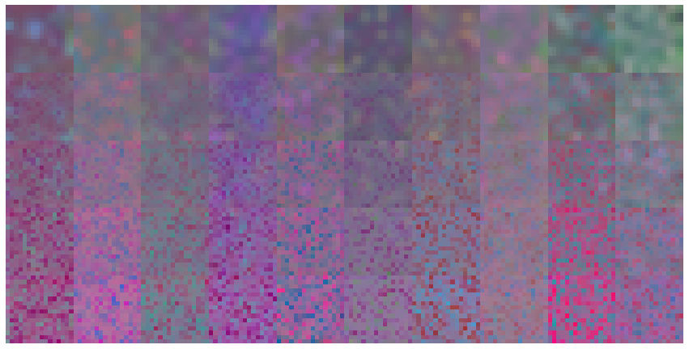

Components of StyleGAN
Goals
In this notebook, you’re going to implement various components of StyleGAN, including the truncation trick, the mapping layer, noise injection, adaptive instance normalization (AdaIN), and progressive growing.
Learning Objectives
- Understand the components of StyleGAN that differ from the traditional GAN.
- Implement the components of StyleGAN.
Getting Started
You will begin by importing some packages from PyTorch and defining a visualization function which will be useful later.
1 | import torch |
Truncation Trick
The first component you will implement is the truncation trick. Remember that this is done after the model is trained and when you are sampling beautiful outputs. The truncation trick resamples the noise vector $z$ from a truncated normal distribution which allows you to tune the generator’s fidelity/diversity. The truncation value is at least 0, where 1 means there is little truncation (high diversity) and 0 means the distribution is all truncated except for the mean (high quality/fidelity). This trick is not exclusive to StyleGAN. In fact, you may recall playing with it in an earlier GAN notebook.
1 | # UNQ_C1 (UNIQUE CELL IDENTIFIER, DO NOT EDIT) |
1 | # Test the truncation sample |
Success!
Mapping $z$ → $w$
The next component you need to implement is the mapping network. It takes the noise vector, $z$, and maps it to an intermediate noise vector, $w$. This makes it so $z$ can be represented in a more disentangled space which makes the features easier to control later.
The mapping network in StyleGAN is composed of 8 layers, but for your implementation, you will use a neural network with 3 layers. This is to save time training later.
Optional hints for MappingLayers
1. This code should be five lines.
2. You need 3 linear layers and should use ReLU activations.
3. Your linear layers should be input -> hidden_dim -> hidden_dim -> output.
1 | # UNQ_C2 (UNIQUE CELL IDENTIFIER, DO NOT EDIT) |
1 | # Test the mapping function |
Success!
Random Noise Injection
Next, you will implement the random noise injection that occurs before every AdaIN block. To do this, you need to create a noise tensor that is the same size as the current feature map (image).
The noise tensor is not entirely random; it is initialized as one random channel that is then multiplied by learned weights for each channel in the image. For example, imagine an image has 512 channels and its height and width are (4 x 4). You would first create a random (4 x 4) noise matrix with one channel. Then, your model would create 512 values—one for each channel. Next, you multiply the (4 x 4) matrix by each one of these values. This creates a “random” tensor of 512 channels and (4 x 4) pixels, the same dimensions as the image. Finally, you add this noise tensor to the image. This introduces uncorrelated noise and is meant to increase the diversity in the image.
New starting weights are generated for every new layer, or generator, where this class is used. Within a layer, every following time the noise injection is called, you take another step with the optimizer and the weights that you use for each channel are optimized (i.e. learned).
Optional hint for InjectNoise
1. The weight should have the shape (1, channels, 1, 1).
1 | # UNQ_C3 (UNIQUE CELL IDENTIFIER, DO NOT EDIT) |
1 | # UNIT TEST |
Success!
Adaptive Instance Normalization (AdaIN)
The next component you will implement is AdaIN. To increase control over the image, you inject $w$ — the intermediate noise vector — multiple times throughout StyleGAN. This is done by transforming it into a set of style parameters and introducing the style to the image through AdaIN. Given an image ($x_i$) and the intermediate vector ($w$), AdaIN takes the instance normalization of the image and multiplies it by the style scale ($y_s$) and adds the style bias ($y_b$). You need to calculate the learnable style scale and bias by using linear mappings from $w$.
$ \text{AdaIN}(\boldsymbol{\mathrm{x}}_i, \boldsymbol{\mathrm{y}}) = \boldsymbol{\mathrm{y}}_{s,i} \frac{\boldsymbol{\mathrm{x}}_i - \mu(\boldsymbol{\mathrm{x}}_i)}{\sigma(\boldsymbol{\mathrm{x}}_i)} + \boldsymbol{\mathrm{y}}_{b,i} $
Optional hints for forward
1. Remember the equation for AdaIN.
2. The instance normalized image, style scale, and style shift have already been calculated for you.
1 | # UNQ_C4 (UNIQUE CELL IDENTIFIER, DO NOT EDIT) |
1 | w_channels = 50 |
Success!
Progressive Growing in StyleGAN
The final StyleGAN component that you will create is progressive growing. This helps StyleGAN to create high resolution images by gradually doubling the image’s size until the desired size.
You will start by creating a block for the StyleGAN generator. This is comprised of an upsampling layer, a convolutional layer, random noise injection, an AdaIN layer, and an activation.
1 | # UNQ_C5 (UNIQUE CELL IDENTIFIER, DO NOT EDIT) |
1 | test_stylegan_block = MicroStyleGANGeneratorBlock(in_chan=128, out_chan=64, w_dim=256, kernel_size=3, starting_size=8) |
Success!
Now, you can implement progressive growing.
StyleGAN starts with a constant 4 x 4 (x 512 channel) tensor which is put through an iteration of the generator without upsampling. The output is some noise that can then be transformed into a blurry 4 x 4 image. This is where the progressive growing process begins. The 4 x 4 noise can be further passed through a generator block with upsampling to produce an 8 x 8 output. However, this will be done gradually.
You will simulate progressive growing from an 8 x 8 image to a 16 x 16 image. Instead of simply passing it to the generator block with upsampling, StyleGAN gradually trains the generator to the new size by mixing in an image that was only upsampled. By mixing an upsampled 8 x 8 image (which is 16 x 16) with increasingly more of the 16 x 16 generator output, the generator is more stable as it progressively trains. As such, you will do two separate operations with the 8 x 8 noise:
- Pass it into the next generator block to create an output noise, that you will then transform to an image.
- Transform it into an image and then upsample it to be 16 x 16.
You will now have two images that are both double the resolution of the 8 x 8 noise. Then, using an alpha ($\alpha$) term, you combine the higher resolution images obtained from (1) and (2). You would then pass this into the discriminator and use the feedback to update the weights of your generator. The key here is that the $\alpha$ term is gradually increased until eventually, only the image from (1), the generator, is used. That is your final image or you could continue this process to make a 32 x 32 image or 64 x 64, 128 x 128, etc.
This micro model you will implement will visualize what the model outputs at a particular stage of training, for a specific value of $\alpha$. However to reiterate, in practice, StyleGAN will slowly phase out the upsampled image by increasing the $\alpha$ parameter over many training steps, doing this process repeatedly with larger and larger alpha values until it is 1—at this point, the combined image is solely comprised of the image from the generator block. This method of gradually training the generator increases the stability and fidelity of the model.
Optional hint for forward
1. You may find [torch.lerp](https://pytorch.org/docs/stable/generated/torch.lerp.html) helpful.
1 | # UNQ_C6 (UNIQUE CELL IDENTIFIER, DO NOT EDIT) |
1 | z_dim = 128 |
Success!
Running StyleGAN
Finally, you can put all the components together to run an iteration of your micro StyleGAN!
You can also visualize what this randomly initiated generator can produce. The code will automatically interpolate between different values of alpha so that you can intuitively see what it means to mix the low-resolution and high-resolution images using different values of alpha. In the generated image, the samples start from low alpha values and go to high alpha values.
1 | import numpy as np |

1 |